Região
Inhotim: http://www.inhotim.org.br/
O Instituto Inhotim é a sede de um dos mais importantes acervos de arte contemporânea do Brasil e considerado o maior centro de arte ao ar livre do mundo. Está localizado em Brumadinho (Minas Gerais), uma cidade com 30 mil habitantes, a apenas 60 km de Belo Horizonte.
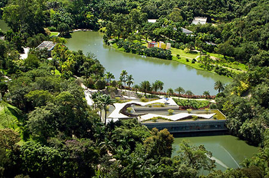

Serra do Cipó: http://www.circuitoserradocipo.org.br/
Descoberta na época dos bandeirantes, a Serra do Cipó, que já foi conhecida como Serra da Lapa e Serra da Vacaria, foi um dos itinerários utilizados por estes desbravadores em busca de riquezas minerais. Sua beleza natural exuberante, divisor de águas das bacias hidrográficas dos rios São Francisco e Doce, sempre despertou interesse e fascinação de quem passa pela região. Possuindo dezenas de cachoeiras, trilhas e uma excelente estrutura hoteleria, é uma região convidativa para os amantes da natureza.
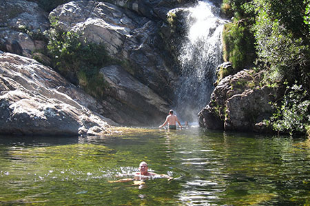
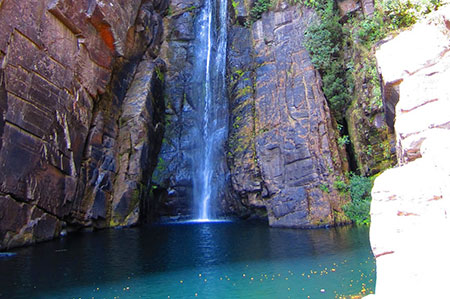
Circuito das Cidades Históricas: Ouro Preto, Mariana, Congonhas do Campo, Sabará, Tiradentes, São João Del Rei, e Diamantina
Minas Gerais abriga muitas cidades culturalmente e historicamente importantes que datam da era colonial portuguesa. Atualmente, muitas dessas cidades e seus edifícios são reconhecidos por organizações como a UNESCO e IPHAN por suas contribuições culturais, históricas e arquitetônicas, bem como por sua relevância para humanidade. A maioria destas cidades podem ser visitadas partindo e retornando a Belo Horizonte no mesmo dia.
Para mais informações sobre as cidades do Circuito Histórico e outros locais históricos próximos, por favor visite: http://www.belo2014.com/en/proximo-a-belo-horizonte/
Muitas dessas cidades se encontram ao longo da Estrada Real, a rota histórica de comércio colonial que forma o desenvolvimento da era colonial de Minas Gerais e do Brasil. Para mais informações sobre a Estrada Real, por favor visite: http://www.institutoestradareal.com.br/
Ouro Preto
Patrimônio histórico e cultural da humanidade, Ouro Preto guarda em suas ladeiras de pedra sentimentos que arrebatarão o visitante. A cidade foi fundamental no ciclo do ouro, período em que a extração e exportação do ouro dominavam a economia da colônia. Abriga o maior conjunto arquitetônico do barroco no país, com obras de Aleijadinho. (99 km de BH). http://www.ouropreto.org.br/
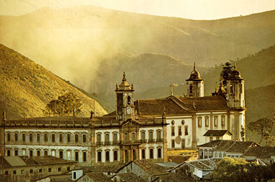
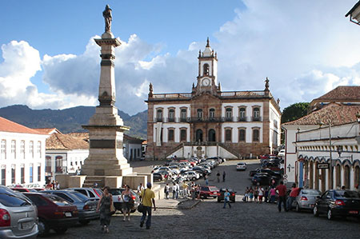
Mariana
Primeira vila, bispado e capital de Minas Gerais, Mariana é uma das mais importantes cidades históricas do Brasil, sendo a primeira e única cidade do período colonial com traçado urbanístico projetado. Juntamente com Ouro Preto, possui um dos mais belos conjuntos arquitetônicos representativos do barroco de Minas Gerais. (110 km de BH). http://www.mariana.org.br/

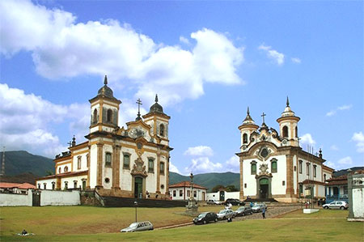
Congonhas do Campo
Patrimônio cultural da humanidade, título conferido pela UNESCO em 1985, a cidade abriga o Santuário do Bom Jesus de Matosinhos. A fama não se deve apenas à questão religiosa, mas também por guardar um dos maiores patrimônios artísticos do Brasil: as obras máximas executadas pelo Aleijadinho, os 12 Profetas em pedra-sabão e 66 figuras em cedro nos passos da paixão. (83 km de BH) http://www.congonhas.org.br/
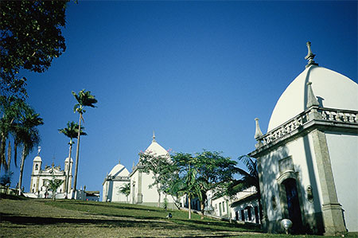
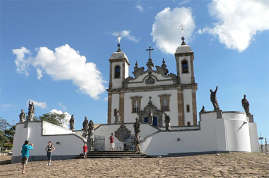
Sabará
O nascimento de Sabará, a cidade histórica mais próxima da capital, está ligado à lenda da serra resplandecente feita de prata e pedras preciosas. Sabará é o primeiro povoado mineiro, sendo desbravado no período da colonização, no século XVI. Sabará possui sete igrejas e um conjunto arquitetônico representativo do barroco de Minas Gerais (19 km de BH). http://www.sabara.org.br/port/passeios.asp
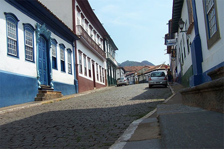
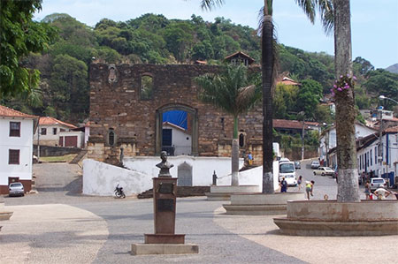
Tiradentes
Tiradentes é uma mistura dos sabores de Minas: história, cultura, religiosidade, natureza e gastronomia. É uma das cidades históricas mais charmosas do estado, com importantes exemplos de arte barroca enriquecendo sua paisagem. Algumas de suas principais construções têm o toque magistral do escultor Aleijadinho. Tiradentes foi tombada como patrimônio histórico nacional pelo Instituto do Patrimônio Histórico e Artístico Nacional, IPHAN, em 1938. (194 km de BH). http://www.tiradentesgerais.com.br/
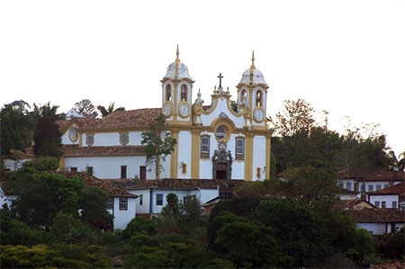
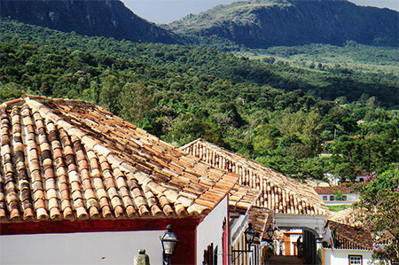
São João Del Rei
Fundada para ser via de escoamento do ouro mineiro até o Rio de Janeiro, São João Del Rei é patrimônio material do IPHAN e teve seu conjunto arquitetônico urbanístico tombado pela mesma entidade. Lá nasceram Tiradentes, Tancredo Neves, Otto Lara Resende, Francisca Paula de Jesus. (186 km de BH). http://www.guiadelrei.com.br/site/
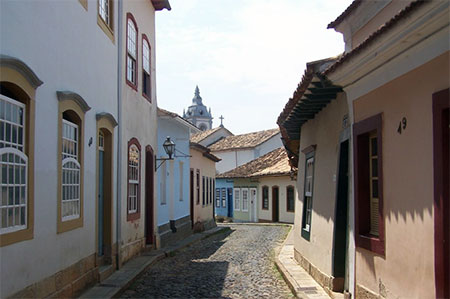

Diamantina
Diamantina soube conservar sua arquitetura, sua cultura e sua natureza e se tornar uma das cidades históricas mais conhecidas e visitadas do brasil. Possui casario colonial de inspiração barroca, construções históricas, igrejas seculares, paisagem cênica e uma forte tradição religiosa, folclórica e musical, com suas serenatas e vesperatas que tocam no mais profundo da alma. Hoje, essas características, além de encantar a todos, trouxeram para a cidade o título de patrimônio cultural da humanidade concedido pela UNESCO. Diamantina pode acessado a partir de Belo Horizonte pela rodovia federal BR-259 ou por vôos regulares entre o Aeroporto da Pampulha, em Belo Horizonte e do Aeroporto de Diamantina.(292 km de BH). http://www.diamantina.mg.gov.br/
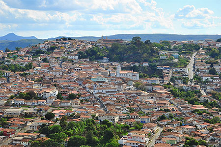